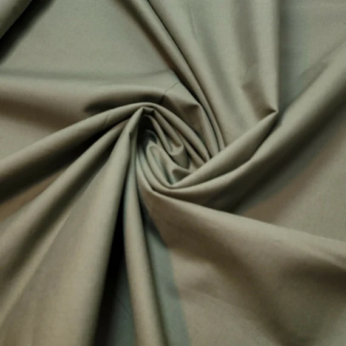

Cotton Lawn :
Description : Cotton lawn is a lightweight, breathable fabric made from finely combed cotton fibers. It is characterized by its smooth, silky texture and crisp finish, making it ideal for warm-weather garments.
Available colours: White,Black,Blue,Grey,Green,Pink,Purple,Yellow.
Price: 110$ /per metre
Width: "58"
Buy now

Poplin
Description :Cotton Poplin is a lightweight, breathable fabric known for its smooth texture and crisp finish. Woven in a plain weave with fine horizontal ribs, it offers a subtle sheen and is resistant to wrinkles, making it ideal for warm-weather garments.
Available colours: White,Black,Blue,Grey,Green,Pink,Purple,Yellow,Cream.
Price: 50$/per metre
width: "54"
Buy now

Muslin
Description : Cotton Muslin is a lightweight, breathable fabric known for its soft texture and versatility. Traditionally woven in a plain weave, it ranges from sheer to medium weight and is used in various applications, including apparel, quilting, and home décor. Muslin's natural fibers make it gentle on the skin, making it a popular choice for summer clothing and baby products.
Available colours: White.
Price: 150$ / per metre
Width: "58"
Buy now